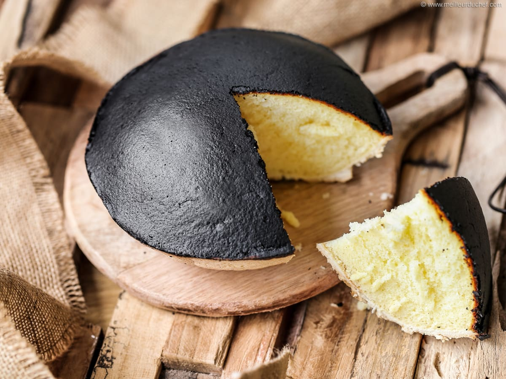

Tourteau
Fromager
Poitevin


⟹ Douceurs ⟸
Le tourteau fromager est la pâtisserie la plus singulière du Poitou — et sans doute l'une des plus surprenantes de France. Sa particularité absolue réside dans sa calotte noire charbonneuse, obtenue par une cuisson volontairement poussée à très haute température, qui contraste de façon spectaculaire avec l'intérieur blanc, mousseux et légèrement acidulé à base de fromage de chèvre frais.
Né dans les campagnes du Poitou entre le XVIIe et le XVIIIe siècle, le tourteau fromager était à l'origine un gâteau de fête préparé pour les grandes occasions — mariages, baptêmes, foires agricoles. Les femmes des fermes poitevines utilisaient le fromage de chèvre frais produit en abondance dans cette région d'élevage caprin réputée, ainsi que les œufs des basses-cours, pour confectionner ce gâteau économique et nourrissant.

« Le tourteau fromager, c'est la beauté du brûlé : ce qui ressemble à un accident de four est en réalité le secret le mieux gardé du Poitou. »
— Henri Pellerin, gastronome poitevin, 1958La croûte noire n'est pas un défaut mais une signature intentionnelle : elle se forme quand l'appareil au fromage, très riche en albumine, monte rapidement sous l'effet de la chaleur et carbonise en surface tout en restant moelleux à cœur. Les anciens boulangers poitevins cuisaient le tourteau dans le four encore brûlant après la fournée du pain, profitant de la chaleur résiduelle extrême.
Aujourd'hui classé parmi les patrimoines gastronomiques de la Vienne et des Deux-Sèvres, le tourteau fromager fait l'objet d'une production artisanale maintenue par une poignée de boulangers et de pâtissiers qui refusent de céder aux versions industrielles à croûte brune — une pâle imitation qui trahit l'identité de ce gâteau unique.
Version au caillé de vache : dans certaines fermes des Deux-Sèvres et de la Vienne, le fromage de chèvre est remplacé par du caillé de vache frais, donnant un tourteau plus doux, moins acidulé, à la texture plus crémeuse et fondante. Cette version est souvent préférée des enfants.
Tourteau fromager à la vanille : quelques boulangers ajoutent une gousse de vanille grattée dans l'appareil à la place de la fleur d'oranger, créant un profil aromatique plus rond et moins floral, très apprécié dans la version dessert de restaurant.
Mini-tourteaux individuels : déclinés en moules de 8 à 10 cm, les tourteaux individuels sont très populaires dans les marchés et épiceries fines du Poitou. Ils se conservent mieux à l'unité et sont plus pratiques à emporter comme souvenir gourmand.
Version industrielle à calotte brune : présente dans les supermarchés, cette version utilise une croûte brunâtre obtenue par dorure à l'œuf plutôt que par carbonisation réelle. Les puristes la rejettent catégoriquement : sans la calotte noire authentique, ce n'est pas un vrai tourteau fromager poitevin.
Le tourteau fromager authentique — à calotte vraiment noire — se fait de plus en plus rare face à la concurrence industrielle, mais quelques artisans le maintiennent en vie :
Boulangerie Burgaud (Mauzé-sur-le-Mignon, Deux-Sèvres) — référence absolue du tourteau fromager artisanal, cette maison familiale produit ses tourteaux chaque matin avec du fromage de chèvre frais acheté directement chez les éleveurs locaux. La calotte est franchement noire et l'intérieur d'une légèreté remarquable.
Pâtisserie Rivière (Niort) — maison niortaise qui perpétue la tradition depuis 1962, proposant le tourteau en format familial (20 cm) et en version individuelle, vendu dans un emballage de papier sulfurisé selon l'usage ancien.
Marché de Poitiers (place Charles-de-Gaulle, samedi matin) — plusieurs producteurs fermiers des environs proposent leur tourteau fait maison aux côtés du fromage de chèvre frais, de la mêlée poitevine et des légumes du marché. L'occasion de goûter plusieurs interprétations côte à côte.
Fermes des Deux-Sèvres — la vente directe à la ferme reste le meilleur moyen d'accéder au tourteau le plus authentique, souvent préparé le vendredi pour la vente du week-end, avec le lait et le fromage de la semaine.